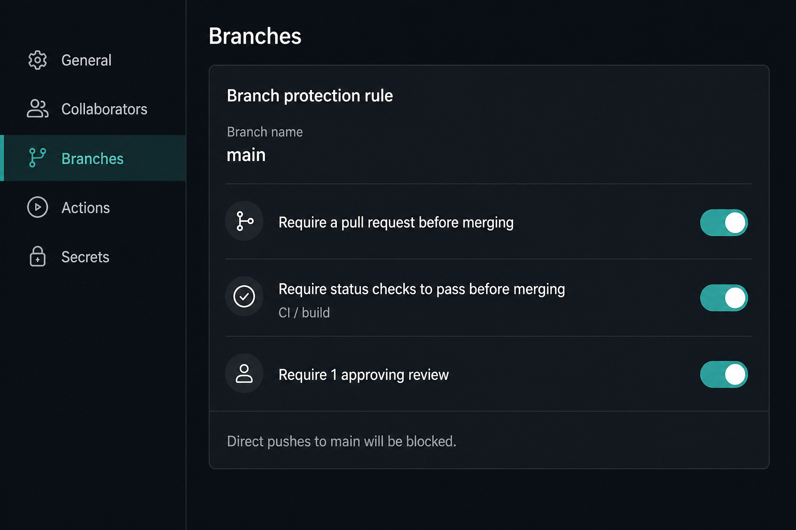
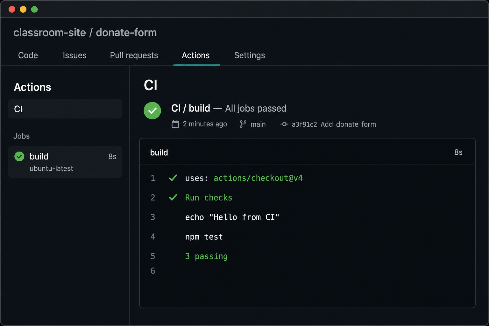
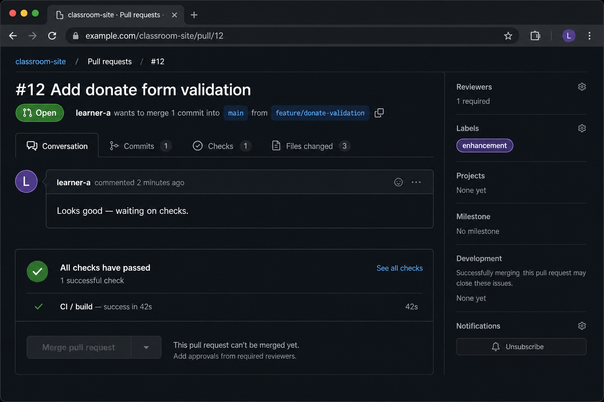

Host code, collaborate with pull requests, and automate checks with Actions
OCN NI Level 2–3 — DevOpsBy the end of this session, you will be able to:
Interactive slides — click, tap, or use the keyboard:
Build a workflow · Step a pipeline · Review a PR · Protect main — all clickable, tappable, and keyboard-operable
A Friday push to unprotected main can ship a broken donate form. No tests run. The charity site collects nothing all weekend. CI would have turned that push red before anyone merged.
“Works on my PC” is not a release strategy. Automated checks plus a protected main branch stop one tired Friday from becoming a Monday incident.
.git folderCommit locally with Git
Send to the GitHub remote
Actions tests, lint, or build
Deploy only if green
Prove the CI loop: push → workflow runs → see pass or fail. CD waits until checks are trusted.
Drag (or tap to select, then tap a slot) the YAML chips into order. Wrong slots shake.
name: CI
on: [push, pull_request]
jobs:
build:
runs-on: ubuntu-latest
steps:
- uses: actions/checkout@v4
- name: Run checks
run: |
echo "Hello from CI"
# npm test / python -m pytest / ...
File lives at .github/workflows/ci.yml. Keep the first job tiny and visible. Learners should see the YAML, the push, and the Actions log in one demo pass.
Use repo Secrets for tokens — not the YAML file
Require a PR plus green status checks
Fail messages are clues, not insults

Settings → Branches: require a PR, green checks, and a review before merge.
Press Next to start from a git push…

A real Actions tab: green CI / build, checkout@v4, three tests passing.
Knight Capital deployed trading software with an old unused flag still live. There was no automated check to stop the release. In 45 minutes the firm lost about $440 million and had to be rescued. A protected branch plus a failing status check would not have saved every bug — but it would have forced a human gate before production.
The donate-form site is the same idea at student scale: never merge to main while the check is red. Always require a green CI run before merge.
| Symptom | Likely cause | Fix |
|---|---|---|
| No workflow appears | File not in .github/workflows/, or Actions disabled | Move to ci.yml and enable Actions on the repo |
| YAML parse error | Wrong indentation or a missing colon | Compare with the cheat-sheet workflow; YAML is space-sensitive |
| Secret leaked in the log | Token committed in the file or printed with echo | Rotate the token; store it as a repo Secret |
| Red X ignored, still merged | main is not protected | Require status checks to pass before merge |
| PR looks fine, main is broken | Workflow only on push, not pull_request | Trigger on both events |
| Checkout step fails | Pinned to an ancient action, e.g. checkout@v1 | Use a current major, e.g. actions/checkout@v4 |
Review pull request #12. Pick Approve, Request changes, or Comment for each file.

This is what learners will see on a real PR — green checks still need a review.
Score: 0 / 3
Toggle the rules, then judge each event: Allow or Deny. Optional 60s round stores your best score.
learner-a runs git push origin main with a one-line fix.
Judge the event against the rules on the left.
.github/workflows/ci.ymlci.yml you usedorigin) that the team shares.main).build on ubuntu-latest).ubuntu-latest VM.Programming and testing pathway — open a sibling deck when you need the next skill:
Prerequisite — init, add, commit
You are here — remotes, PRs, pipelines
What CI actually runs
When a check fails, write it up
Old behaviour still passes
Where CD would publish
6 scored questions — pick one answer each. Your running score appears top-right.
Score: 0 / 6
Q1: GitHub is best described as…
Q2: Continuous Integration (CI) mainly means…
Q3: Where do GitHub Actions workflow files usually live?
.github/workflows/ as YAMLQ4: A protected main branch that requires status checks will…
Q5: Where should an API token for CI live?
ci.yml so everyone can see itQ6: A CI job is red. What should you read first?
—
0 / 6
Finish the six questions to see your grade.
Git is local; GitHub hosts and shares
Same tests on every push
Review and require green
Never hard-code tokens
These skills support real IT career routes
Junior Developer
DevOps / SRE
Platform Engineer
Questions? Let's discuss!
DevOps — GitHub & CI/CD
OCN NI Level 2–3 — DevOpsPowered by A1 Agents - Designs by C4R50N